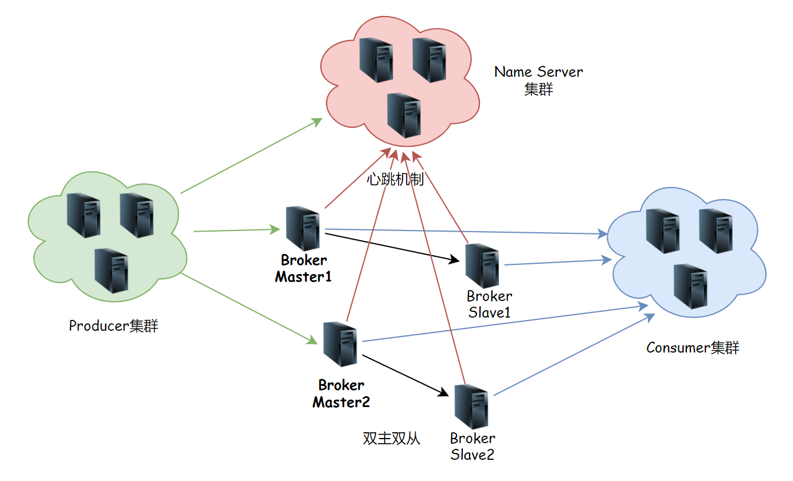
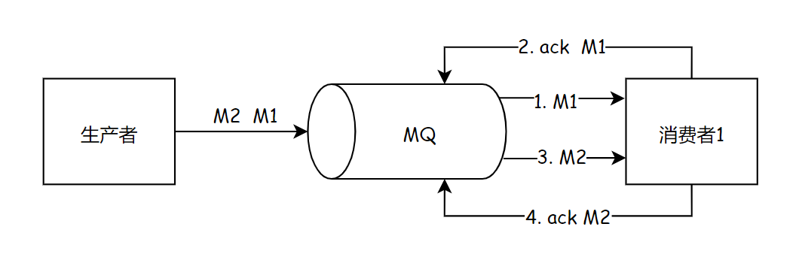
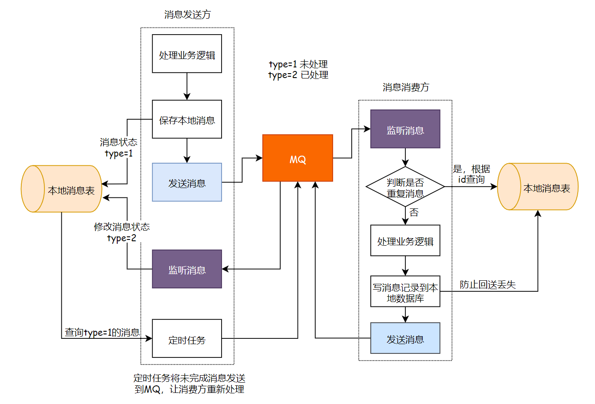
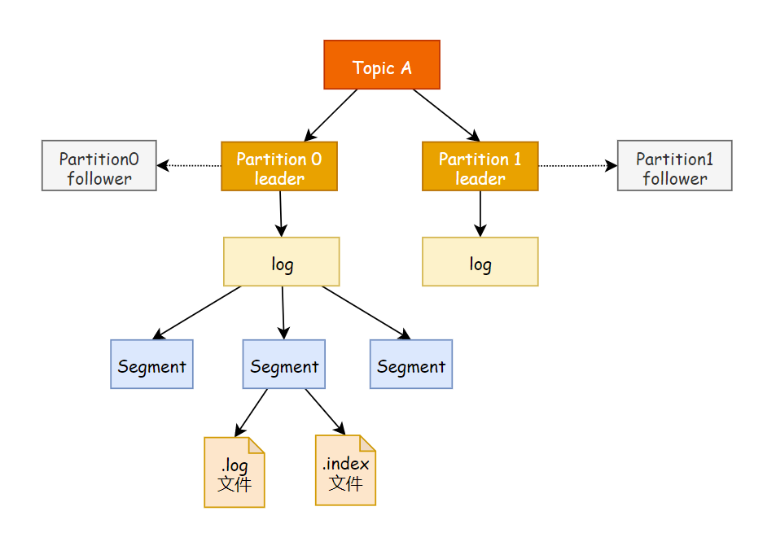

1. 消息队列
1.1 消息队列的两种模式
- 点对点模式：一对一，消费者主动拉取数据，消息收到后消息清除。速度由客户端控制，需要客户端自己监控队列
- 发布订阅模式：一对多，速度由发送方控制，无需客户端自己监控队列。可以队列主动推送或者消费者自己主动拉取，消费者消费数据之后不会立即清除消息

1.2 消息队列的优缺点
优点：
解耦
扩展性
灵活性，峰值处理(削峰)
可恢复性：消息处理的进程挂掉，加入队列的消息仍然可以在系统恢复后被处理
顺序保证
缓冲：解决生产消息和消费消息的速度不一致的情况
异步通信
缺点：
系统可用性降低(MQ宕机对业务造成影响，如何保证高可用？)
系统复杂度变高(如何解决消息丢失？消息重复处理？保证消息的顺序？越来越复杂)
一致性问题：如何让保证消息数据处理的一致性(使用分布式事务)
1.3 如何保证消息队列的高可用
RabbitMQ：使用普通集群
- 在多台机器上分别启动RabbitMQ实例
- 多个实例之间可以相互通信
- 创建的Queue只会放在一个RabbitMQ上，其他的实例都去同步元数据(元数据不是真正的实际数据，而只是实际数据的"引用")
- 消费的时候，如果连接的实例没有Queue，则取queue所在的实例拉取数据
缺点：
没有真正做到高可用（如果真正存放queue的集群挂了，数据就丢失了）
有数据拉取的开销和单实例的瓶颈（所有的数据都要从主实例拉取，有性能瓶颈）

RabbitMQ：使用镜像集群
- 每次生产者写消息到queue的时候，都会自动把消息同步到多个实例的queue上，每个RabbitMQ的节点上都有queue的消息数据和元数据，某个节点宕机，其他节点依然保存了完整的数据，不影响消费者的消费

RocketMQ：双主双从
- 生产者通过Name Server发现Broker
- 生产者发送队列消息到2个Broker主节点
- Broker主节点分别和各自从节点同步数据
- 消费者从主节点或者从节点订阅消息
数据真正存储在Broker中，Name Server记录了Broker的地址。因为生产者并不知道哪个主节点可用，所以要去Name Server询问

1.4 如何保证消息不丢失
消息丢失的原因：
- 生产者没有成功发送到MQ
- 消息发送给MQ之后，MQ还没来得及持久化，MQ的Broker宕机，导致内存中的消息数据丢失了
- 消费者获取到消息，但是消费者还没有来得及处理就宕机了，此时MQ的消息已经删除，消费者重启之后不能再消费之前的消息了
确保消息不丢失的方案
- 消息发送给MQ之后，MQ给生产者确认收到，否则生产者应重试
- MQ收到消息之后进行消息的持久化
- 消费者收到消息处理完毕之后进行ack确认，MQ收到ack之后才删除持久化的消息
1.5 如何保证消息不被重复消费
重复消息产生的原因：
生产者发送消息，MQ应答的时候由于网络原因应答失败，生产者就会发送重复消息
消费者消费完成后，ack由于网络原因没有被MQ接收到，此时消费者就会收到两条相同的消息

如何保证不被重复消费/保证消息的幂等性
- 消息发送者发送消息的时候携带一个全局唯一id
- 消费者获取消息后先根据id在redis中查询是否存在消费记录
- 如果没有消费过就正常消费，消费完后写入redis
- 如果消息已经消费，就应该直接舍弃
1.6 如何保证消息消费的顺序性
顺序性消费：
例如一笔订单产生了3条消息：订单创建，订单付款和订单完成，消费的时候要按照顺序依次消费才有意义
但是多笔订单之间又是可以并行消费的
首先要保证消息顺序到达MQ，还要保证消息被顺序消费？ 生产者：MQ Server：消费者=1：1：1

但是这样效率太低了。。。多笔订单之间不能并行消费。。。。怎么进行并行消费呢
- 生产者根据消息ID将同一组消息发送到一个queue中
- 多个消费者同时获取queue中的消息进行消费
- MQ使用分段锁，锁住该queue，保证单个queue中的有序消费，当M1被消费完后，消费者1回复ack，这时候MQ才释放该queue的锁，这时候M2才能被消费

1.7 基于MQ的分布式事务
分布式事务：用户提交订单，库存服务操作库存DB减库存，订单服务操作订单DB生成订单数据。库存服务和订单服务要么同时成功，要么同时失败。。分布式事务就是为了保证不同数据库的数据的一致性
基于MQ的分布式事务是一个异步模型，将两个服务方解耦了

1.9 几种MQ的对比
| 特性 | ActiveMQ | RabbitMQ | RocketMQ | Kafka |
|---|---|---|---|---|
| 开发语言 | java | erlang | java | scala |
| 单机吞吐量 | 万级 | 万级 | 十万级 | 十万级 |
| 时效性 | ms级 | us级 | ms级 | ms级以内 |
| 可用性 | 高(主从架构) | 高(主从架构) | 非常高(分布式架构) | 非常高(分布式架构) |
| 功能特性 | 文档多，协议支持好 | 并发能力强，延迟低性能好 | 功能完善，扩展性好 | 只支持主要的MQ功能，消息查询、 消息回溯等功能没有提供，大数据领域应用广泛 |
RabbitMQ，如果不考虑二次开发的话，追求稳定性和性能可以考虑使用
RocketMQ是java开发的，稳定性和性能都不错，还方便二次开发，推荐使用
Kafka一般在大数据领域用的多
2. Kafka
Kafka是分布式的基于发布订阅模式的消息队列，对消息保存时根据Topic进行归类，kafka集群有多个kafka实例，每个实例被称为一个broker
无论是kafka集群还是consumer，都依赖于zookeeper集群保存一些meta信息，来保证系统的可用性
2.1 Kafka架构

- 副本机制：Topic的partition可以创建副本，放到其他的Broker里面，保证高可用
- 同一个Topic的同一个partition只能被一个消费者组中的一个消费者消费。最好让partition的数量等于被消费的组中的消费者数量，这样正好一个partition被一个消费者消费
- Topic只是逻辑概念，partition是物理概念，每个partition都对应一个log文件，log文件存储的就是producer生产的数据，不断追加到log文件的末尾，每条数据都有自己的offset。
- 消费者组中的每个消费者都会实时记录自己消费到哪个offset了，以便出错恢复时，从上次的位置继续消费
2.1.1 Kafka文件存储

- 为了防止log文件过大导致数据定位效率低下，Kafka采用分片和索引机制，每个partition分为多个segment，每个segment对应两个文件：.log和.index，这些文件位于一个文件夹：topic名+分区号
- 而.log和.index文件命名以
当前segment中的第一条消息的offset命名：00000000000000239430.log

2.1.2 Kafka生产者
分区的原因：方便在集群中扩展，可以提高并发(可以以Partition未单位读写)
生产者发送ProducerRecord到分区的原则：
- 有指明对应partition的情况下，直接将指明的值作为partition值，发送到指定的partition
- 没有指明partition的值，但是有key，将key的hash值与topic的partition数进行取模得到partition值
- 没有partition也没有key，round-robin算法生成随机的partition值。(第一个partition随机，后续就轮询了)
数据的可靠性：
- Topic的全部follower与leader全部同步完成后，才发送ack给生产者：
延迟高，容忍n台故障需要n+1个副本 - Topic的半数以上follower与leader全部同步完成后，才发送ack给生产者：
延迟低，容忍n台故障需要2n+1个副本
Kafka采用全部follower同步才发送ack的方案，但进行了优化，但是Leader维护了一个
ISR(in-sync replica set)，即和leader保持同步的follower集合。只要ISR中的follower完成同步后，leader就给follower发送ack，如果follower长时间(replica.lag.time.max.ms)未向leader同步数据，该follower将被踢出ISR。Leader发生故障之后，会从ISR中选举新Leaderack应答机制，三种级别，acks参数：
- 0：producer不等待broker的ack，最低延迟，但是可能丢失数据
- 1：producer等待broker的ack，partition的leader落盘成功就返回ack，如果follower同步之前leader故障，会丢失数据
- -1：producer等待broker的ack，pritition的leader和ISR的所有follower全部落盘才返回ack，但是follower同步完成后，broker返回ack前若leader故障，可能造成数据重复
数据的一致性：故障处理
- LEO：每个副本的最后一个offset
- HW：所有副本最小的LEO
- 消费一致性：HW之前的数据才对Consumer可见
- 存储一致性：出现故障，重新选举Leader，会保证其他follower与HW一致，然后同步新leader中到LEO的数据

2.2 Kafka集群
2.3 Kafka工作流程
2.4 Kafka API
2.5 prooducer拦截器
2.6 Streams